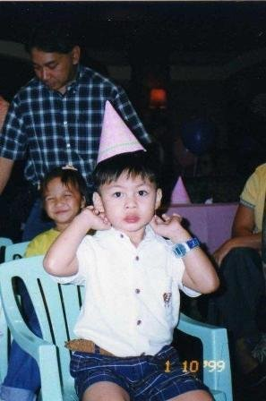
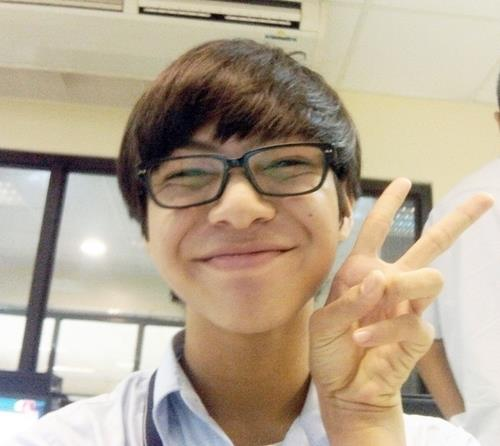
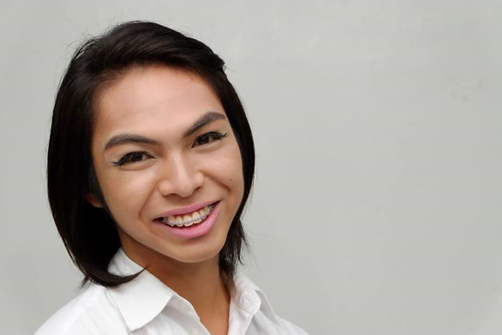
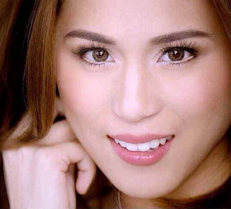

 Growing up was the best. I think I can definately say that I came from one big happy family. It was too big sometimes, if you know what I mean. Hahaha. As a kid, I grew up in the embrace of titas and ninangs, and high-fives of titos and ninongs. I was my lola's (and her sisters' as well) official food taste tester before bigger batches of the dish was made and served. And in return, I would be their prayer buddy at 6 in evening, which was not a problem at all for me because my family was very religious. My cousins were all my first best friends and I think they helped shaped me to be the extroverted person I am today. Our age gaps weren't that far apart so they were my first barkada and I remember playing out in the streets with them, rushing to the sari-sari store when we have five pesos, and playing with beetles (spiders were too freaky for me hahaha). At night, after dinner, my mom and I would have heart-to-heart talks after she got home from work, something which we still try to continue doing up to this day if our time and energy level permits it hehe. Life got better when my little sister came into the picture because that was the first time I felt jealousy hahaha just kidding, that was the first time i felt the responsibilty of being a good role model to someone who look up to you. :)
 Although I knew early on in life who I was and what I was ( I am a superhero with super powers hahaha I'm kidding), I discovered more aspects of myself, my strengths and weaknesses in my high school years. I learned that's it's totally okay to be yourself and just accept it, as long as you treat others the way you would want to be treated. There were a lot of problem during my years in high school, but those only made me stronger and now that I look back at it, I'm grateful that I was able to surpass those challenging moments early on in life. In that stage of life, I found the people whom I can truly call my friends and learned that my family will always be there for me, no matter what. Studying in an environment with such high expectations and almost unaattainable standards taught me the concept of "grace-under-pressure" and made my faith in God even stronger. It was the affirmation and driving force I needed for the next chapter in life.
College put to test everything that I had learned inside and outside of the classroom. Now that I'm halfway through college, I realized that I'm still unsure as to what I really want to do in life. With a course that's broad and encompasses almost every field in the industry out there and with various opportunities presented to a ComArts major, I've learned another important thing. Sometimes it's best to just seize the day (and those oppurtunities) and just keep an open mind for circumstances, adversities and options in life, most especially when it comes to thoughts and plans for one's future. I'm a Speech Communication major but I enrolled in Writing major classes and try to join a lot of theatre productions. Last semester alone, I was a part of Troilus + Cressida, nOSTalgia, and Tsinelas Musikal, with different job experiences and training work for the aformentioned plays. Indeed, as my college life goes on, I've learned (and still learning) that in able to survive college, and eventually life, it's all just a matter of one's perspective towards adversity, diversity in one's choices and decisions, an optimistic outlook no matter what happens, a strong and healty support group, and most importantly, balancing one's commitments.
 And when I grow up in a few years, I will morph into the ultimate multimedia star, Toni Gonzaga. If you notice, my baby steps have started and I'm already starting to look like her. Hahahaha just kidding. No, I do not want to be exactly like her nor look like her. I just want to be the kind of person that she is: extremely talented and even more extremely confident about herself and her capabilities. Yes, she's one person, but you see how she transforms into her many dimensions when she's hosting, performing, endorsing, and acting. I would like to be as versatile as her someday. I would like my talents to be as flexible as she is. I also look up to her "never-say-never" attitude and her wit and candor. Most of all, I aspire to be like her because she always does things for a greater purpose, and ultimately, offers all her endeavors for a higher power. I would like to still be able to plant my feet on the ground while reaching for the skies, and even in the light of success, knowing and remembering that I owe it all to God. :)